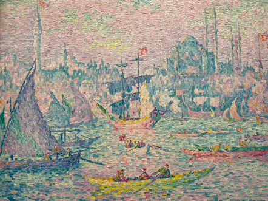
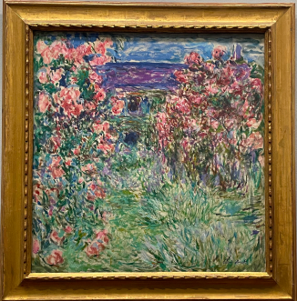
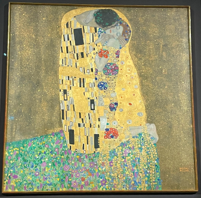
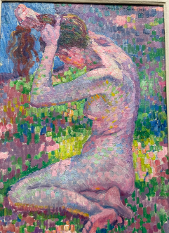
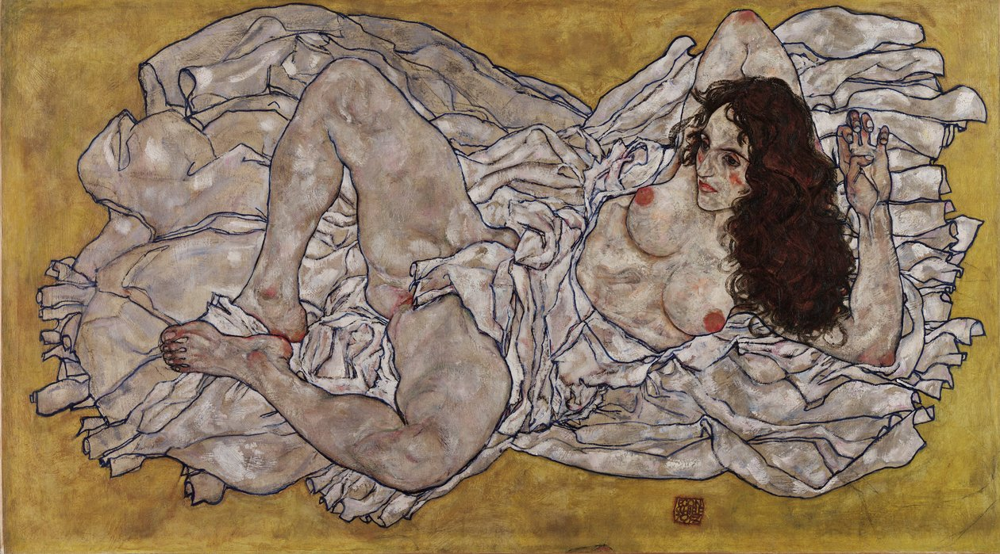

La Corne d'Or, matin
by Paul Signac (1907),
Kunstmuseum Albertina Vienna, Austria

La maison à travers les roses
by Claude Monet (1925),
Kunstmuseum Albertina Vienna, Austria

Der Kuss
by Gustav Klimt (1907-1908),
Schloss Belvedere Vienna, Austria

Naakt Zitten
by Theo van Rysselberghe (1905)
Kunstmuseum Albertina Vienna, Austria

Liegende Frau
by Egon Schiele (1917)
Leopold Museum Vienna, Austria